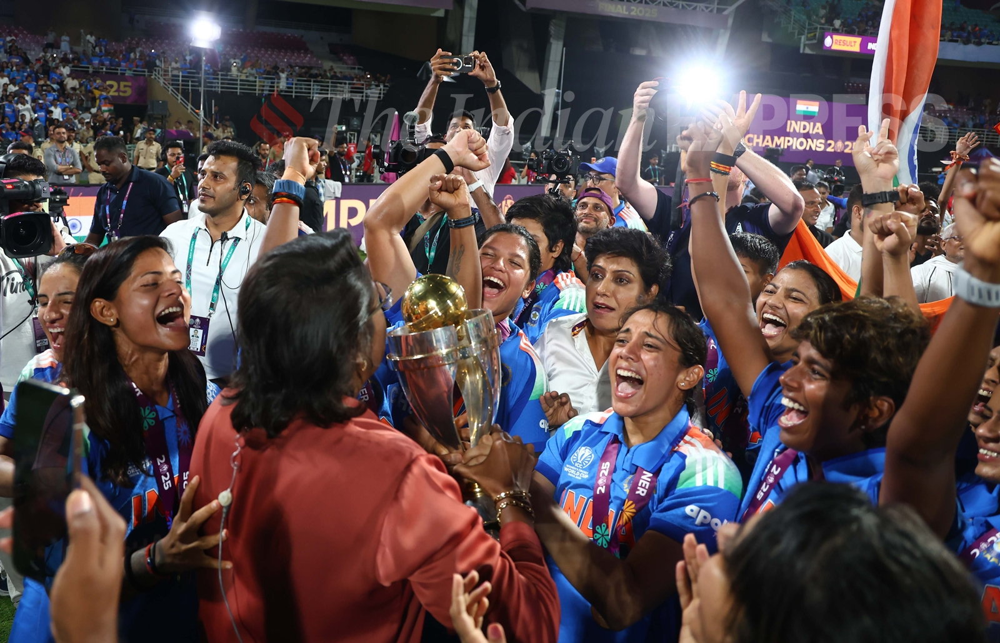
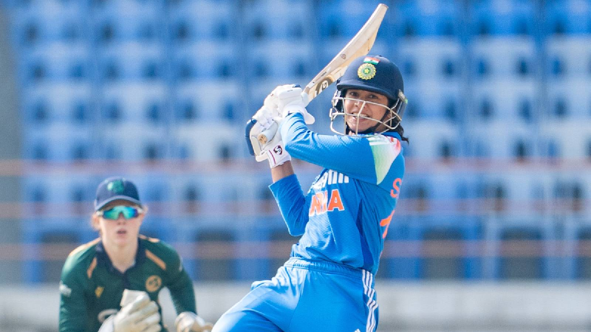

The Aesthetics of Batting
Modern cricket is obsessed with power. We measure bat speeds, exit velocities, and six-hitting distances. We celebrate the muscular brutality of Andre Russell, the chaotic geometry of Suryakumar Yadav, and the sheer force of Rohit Sharma pulling a 145kmph bouncer.
But sometimes, amidst all the violence, you just want to watch someone paint. And nobody in world cricket right now paints a canvas quite like Smriti Mandhana.
When Mandhana bats, she doesn't hit the ball; she strokes it. There is a languid, unhurried grace to her movements that makes fast bowling look entirely unthreatening. It's the kind of batting that reminds you why cricket used to be called a gentleman's game, before T20 cricket turned it into a heavy metal concert. She is classical music played at 130kmph.
That Cover Drive

If you were to compile a video of the most beautiful shots in cricket history — David Gower's square cut, Sachin Tendulkar's straight drive, Brian Lara's pull — you would have to include Smriti Mandhana's cover drive.
It starts with the setup. Being a left-hander instantly gives her an aesthetic advantage (there's just something inherently graceful about left-handed batters). As the bowler releases the ball, her front foot glides forward, not aggressively, but purposefully. Her head remains dead still. Her bat comes down in a perfectly straight arc.
And then, the point of contact. She doesn't smash the ball. She merely uses the bowler's pace, leaning into the drive and letting her wrists do the final piece of negotiation. The ball races to the boundary, and Mandhana is left holding the pose — a silhouette of absolute perfection.
Smriti Mandhana originally batted right-handed as a child! She switched to batting left-handed simply because she wanted to copy her older brother's batting stance. That childhood imitation gave world cricket one of its most elegant left-handed batters.
More Than Just a Pretty Picture

It's easy to get lost in the aesthetics and forget the effectiveness. But Mandhana isn't just an artist; she's a run-scoring machine. Her elegance is backed by a ruthless consistency that has made her the pillar of the Indian batting lineup.
She dominated the Women's Premier League (WPL), carrying Royal Challengers Bangalore on her shoulders and proving that classical, timing-based batting still has a massive role to play in the shortest format of the game. She doesn't need to muscle the ball over cow corner because she can pierce the off-side field with surgical precision.
The Face of a Revolution
Indian women's cricket is undergoing a massive transformation. With the advent of the WPL, the pay parity agreements, and the increasing television coverage, young girls across the country finally have visible idols to look up to.
And there is no better poster child for this revolution than Smriti Mandhana. She plays the game exactly how it should be played — with dignity, with skill, and with an elegance that makes you stop whatever you're doing and just watch.
📷 Image Credits: Images via BCCI/WPL
Frequently Asked Questions
Why is Smriti Mandhana's batting considered elegant?
Mandhana relies on pure timing and classical technique rather than brute power. Her left-handed stance, high elbow, and flawless cover drive are textbook examples of cricketing aesthetics.